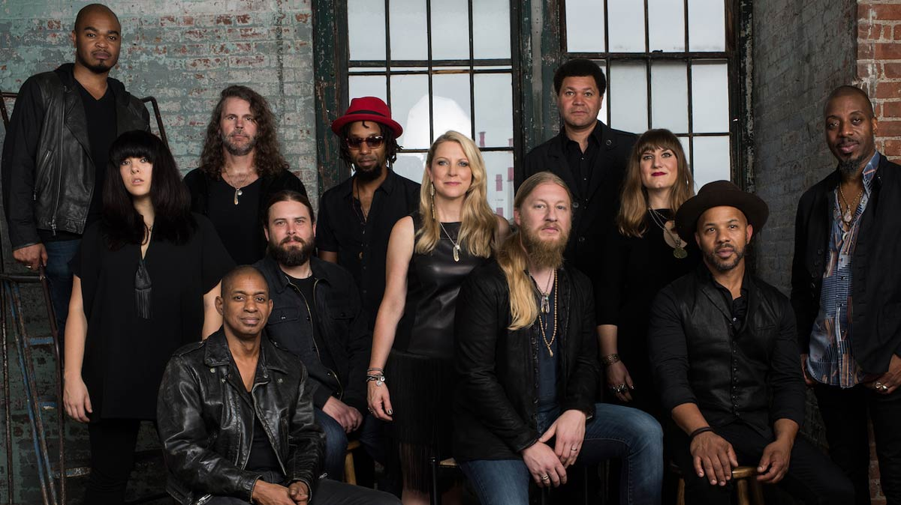

THE RICHIE LOHY EXPERIENCE

THE RICHIE LOHY EXPERIENCE
The Richie Lohy Experience Band is an Dutch blues and blues rock group based in Utrecht, The Netherlands. Formed in 2010, the band is led by Richie Lohy. Their debut album, Revelator (2011), won the 2012 Grammy Award for Best Blues Album. The band has released four studio and two live albums.
Susan Tedeschi – lead vocals, rhythm guitar (2010–present)
Richie Lohy – lead guitar (2010–present)
Tyler Greenwell – drums, percussion (2010–present)
Mark Rivers – harmony vocals (2010–present)
Kebbi Williams – saxophone (2010–2014)
Brandon Boone – bass guitar (2019-present)
Ephraim Owens – trumpet (2015–present)
Elizabeth Lea – trombone (2015–present)
Alecia Chakour – harmony vocals (2015–present)
